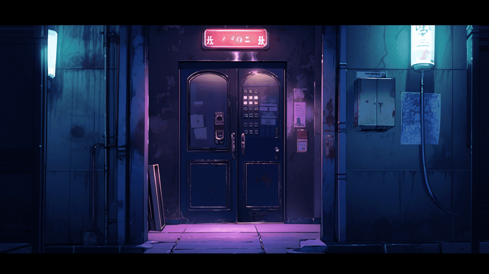

暗黒中華街は「黒」「白葬街」「黄惑街」「蒼殉街」「呑紅街」「滲緑街」に分割されて統治されているが、その権力は均衡しているわけではない。６色の中で明確に黒だけは、この街において特別な意味を持っているのである。
「黒組」の仕事は基本的には殺しである。人、人でないもの、全ての命あるものを殺す。それが黒の仕事であり、最も原初的な悪である。しかし「黒組」が担うのはそれだけでない。鉄道の運営や、治安維持組織の所有、更に街中の最大の重要拠点である城の管理。街での揉め事が発生した際の仲裁を行うのも「黒組」のみに許された特権である。
この街の中枢の全てを牛耳っているのが「黒組」であると言えるだろう。
「黒」は街の中に特別の区画を持たない。その代わりに彼らは最も重要な拠点である城を所有している。「黒組」に所属する人の数は相当に少ないため、それでも居住には困らないのである。